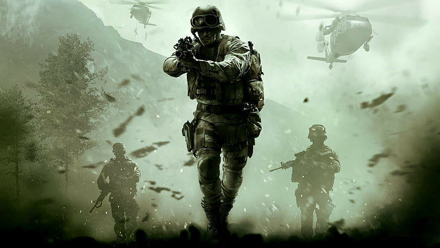
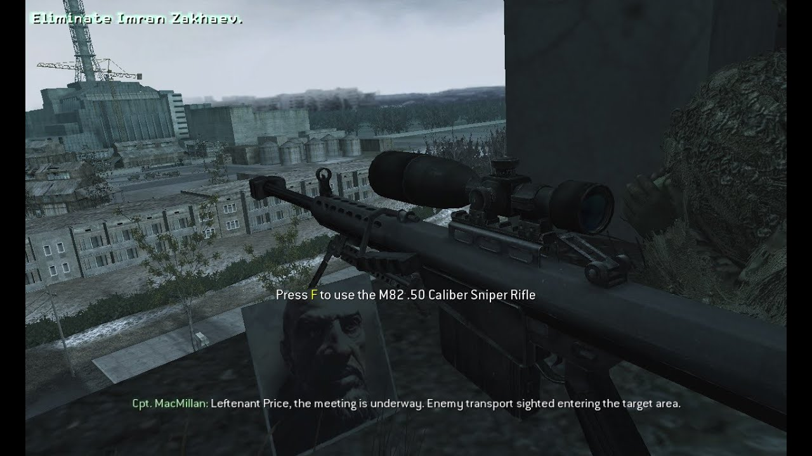
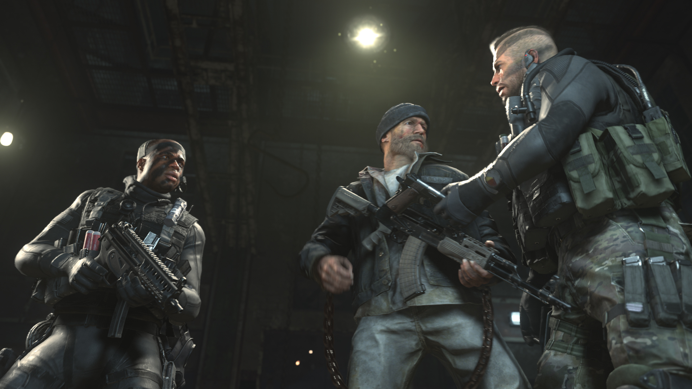
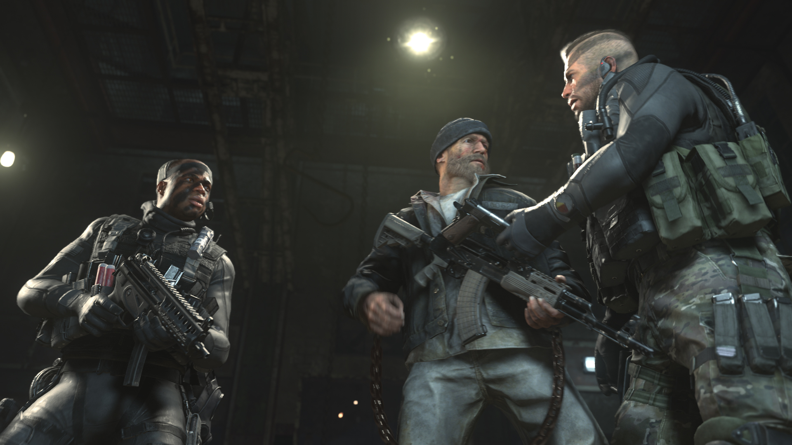
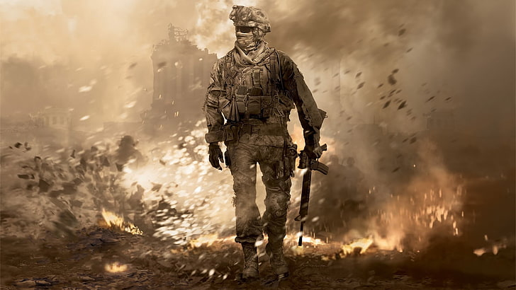
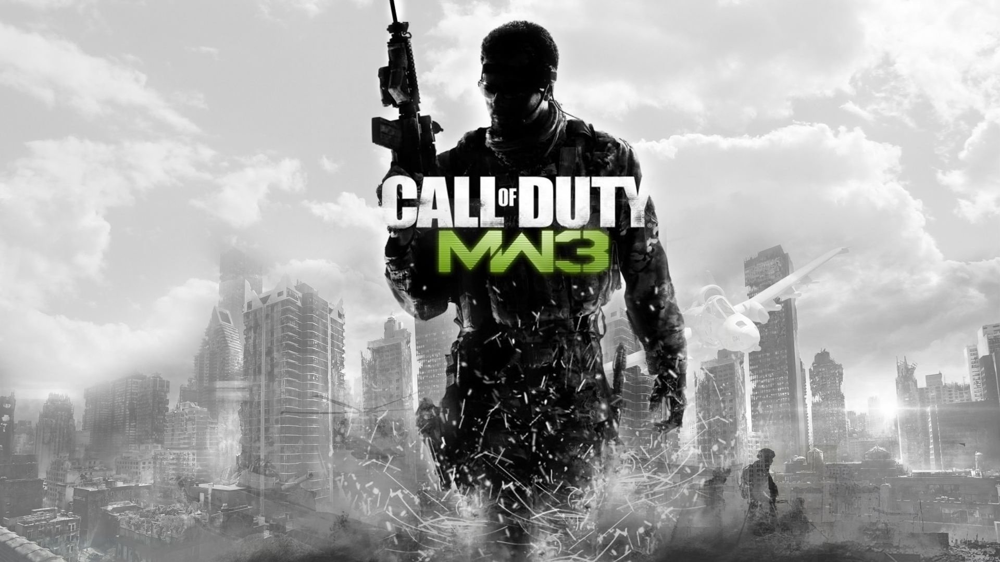

Modern Warfare
Historia de Call of duty Mordern Warfare
Un resumen breve sobre la historia de los acontesimientos de la historia de call of duty
Disfruta de esta historia

Como Inicia la Historia
-
Call of duty Modern Warfare 1

En 2011, ha estallado una guerra civil en Rusia entre su gobierno y los ultranacionalistas quienes buscan restaurar Rusia a su glamur de la era soviética. En el estrecho de Bering un equipo del Servicio Aéreo Especial británico al mando del capitán John Price, realiza una incursión a un barco carguero estoniano, en sus bodegas encuentran un contenedor con una ojiva nuclear con destino a una organización terrorista árabe, pero antes de confiscar el dispositivo el barco es atacado por cazas, los ingleses huyen con el manifiesto de carga del navío, con el novato del equipo, el sargento John "Soap" MacTavish casi quedándose atrás. Mientras tanto, un grupo separatista dirigido por Khaled Al-Asad toma el poder de Arabia Saudita mediante un golpe de estado, asesinando a su presidente Yashir Al-Fulani en cadena nacional. Al-Asad es despiadado y tiene vistas antioccidentales extremas, discordantes a los Estados Unidos, que invade el país para restituir la democracia. En la madrugada del segundo día, el mismo equipo SAS se infiltra en el Cáucaso ruso para rescatar a un informante conocido como Nikolai, dentro de las filas ultranacionalistas con la ayuda de una unidad del Ejército Ruso leal al gobierno, después de ser rescatado, el informante les dice que las fuerzas golpistas en medio oriente pueden tener un artefacto nuclear ruso. En la tarde del segundo día de la invasión, una unidad de la 1.º Fuerza de Reconocimiento del Cuerpo de Infantería de Marina de los Estados Unidos es enviado a capturar a Al-Asad. Las fuerzas estadounidenses atacan una estación de televisión en el que Al-Asad se cree que está transmitiendo en vivo y luego entra en combate urbano en una ciudad de nombre desconocido al sur de la capital.
En camino a una casa de seguridad en Hamburgo, el Blackhawk donde los británicos y Nikolai efectuaban su escape es derribado, haciendo un aterrizaje forzoso en una granja. Tras evadir las patrullas ultranacionalistas y derribar un Hip, un AC-130 de la Fuerza Aérea de los EE.UU. comienza a darles apoyo aéreo cercano para avanzar a través del territorio enemigo, posteriormente siendo rescatados en un deshuesadero. En la tarde del tercer día, los EE.UU. lanza un asalto a gran escala en el palacio presidencial de Al-Asad, a pesar de la advertencia del SAS sobre la posible arma nuclear. Mientras los SEALs de la Marina de EE.UU. asaltan el palacio presidencial y los equipos NEST intentan deshabilitar el arma nuclear en posesión de los árabes, los marines atacan las fuerzas terrestres de Al-Asad. El asalto, sin embargo, termina en catástrofe cuando el arma nuclear de repente se detona en plena retirada de los estadounidenses, eliminando la mayor parte de la ciudad junto con todos en ella. La explosión también mata a Jackson, cuando el Sea Knight donde evacuaba con su pelotón es derribado por la onda expansiva.
Negándose a asumir que Al-Asad murió, un equipo de ataque SAS apoyado por los leales de Rusia ataca un piso franco potencial en un pueblo de Azerbaiyán. Liderados por el capitán Price, el equipo de ataque erradica las fuerzas rusas ocupantes y capturan a Al-Asad. Pronto en el interrogatorio, suena el teléfono de Al-Asad. Después de escuchar la voz del que llama, el capitán Price ejecuta a Al-Asad y revela que quien llamaba era el líder de los ultranacionalistas: Imran Zakhaev.
El capitán Price cuenta la historia de una misión en Prípiat, Ucrania en 1996. Como consecuencia del accidente de Chernóbil y el colapso de la Unión Soviética, Zakhaev aprovechó la confusión para sacar provecho de la proliferación nuclear, vendiendo el material radioactivo y utilizando su nueva riqueza para atraer a los soldados del ejército soviético para formar su partido ultranacionalista. Price, en ese entonces un teniente, bajo el mando del capitán MacMillan fueron enviados en una operación negra para asesinar a Zakhaev. Desde su puesto de observación en el piso superior del hotel Polissya, Price disparó contra Zakhaev un Barrett M82, pero el disparo solo cortó el brazo de Zakhaev. MacMillan asume que el shock y la pérdida de sangre terminarán con Zakhaev, ordenando una rápida retirada mientras un Havoc destruye el escondite, ya estando en la calle comienzan a avanzar por la ciudad para llegar al punto de extracción, siendo perseguidos por los ultranacionalistas. Tras perderlos en un edificio de apartamentos logran derribar un helicóptero, pero este al estrellarse deja herido a MacMillan en sus piernas, Price lo lleva a sus espaldas mientras los ultranacionalistas los persiguen. Atravesando la Piscina Azul, llegan al punto de extracción, el parque de diversiones de la ciudad, luego de dejar a su superior tras la rueda de la fortuna y plantar minas Claymore, Price toma posición mientras los ultranacionalistas comienzan a asaltar el lugar, tras resistir varias oleadas, son rescatados por un Sea Knight estadounidense.

El SAS, los Marines y los Leales intentan capturar al hijo de Zakhaev -Victor- para conocer el paradero de su padre pero mientras lo arrinconan en la azotea de un edificio de apartamentos, Victor se suicida con un disparo en la cabeza. Enfurecido, Zakhaev ordena que todas las fuerzas estadounidenses y británicas abandonen territorio ruso inmediatamente, amenazando con consecuencias severas de no obedecer. Sabiendo que Zakhaev tomó control de un silo nuclear, el SAS y los marines se insertan por aire a una aldea cercana, con Price y su equipo teniendo la misión de destruir las torres de transmisión que proveen de energía al silo. Destruyendo las torres, la energía se corta y un segundo equipo ataca directamente el silo, mientras Price y los demás se acercan al lugar, dos misiles balísticos intercontinentales son lanzados, se estima que su objetivo es la costa este de los EE.UU., calculando 41 millones de muertos. La única manera de parar en seco el ataque es destruir los misiles en vuelo, estadounidenses y británicos se infiltran en el silo, llegando a la sala de control y activando la autodestrucción de los proyectiles, imágenes satelitales confirman la destrucción de los misiles sobre el océano Atlántico.
ras salir a la superficie, estadounidenses y británicos comienzan su escape en camiones, siendo perseguidos por vehículos ultranacionalistas y un Hind, llegando a un puente, el helicóptero lo destruye, dejando atrapados a lo SAS y marines. La consiguiente lucha con los ultranacionalistas deja a todos en la fuerza conjunta muertos o gravemente heridos. El propio Zakhaev llega y comienza a matar los soldados heridos -Gaz y Griggs- cuando los leales de repente destruyen su Mi-24 Hind y se unen a la refriega. Zakhaev muere acribillado por Soap. Las fuerzas leales comienzan a atender a los heridos de inmediato.
En el epílogo, el incidente de los misiles y el apoyo de los ultranacionalistas a Al-Asad son silenciados, lo que causa los eventos de Call of Duty: Modern Warfare 2. -
Call of duty Modern Warfare 2
Acto I
El sargento Foley, acompañado de un traductor afgano, está adiestrando reclutas del Ejército Nacional Afgano en la base de artillería Phoenix de Afganistán. El soldado Allen, asistiendo a su sargento en la instrucción, realiza una demostración de fuego de fusileria y uso de granadas para ellos, terminido el entrenamiento, se dirige hacia un foso de entrenamiento, donde se encuentra con el cabo Dunn. Él le dice que el General Shepherd estaba buscando a alguien de su unidad para una serie de operaciones especiales, y que podría resultar elegido si da buenos resultados. Tras recorrer el foso, Allen se reúne con su escuadrón nuevamente para ir en apoyo a una emergencia.
Los rangers perdieron una ciudad en la zona roja de Afganistán, por lo que se dirigen a recuperarla. Al principio, el pelotón del sargento Foley realiza fuego de contención mientras un tiendepuentes trabajaba en un puente destruido, entrando a la ciudad a través de él. Una vez que logran cruzar observan como una pareja de F-15 bombardean un edificio ocupado por los talibanes. Una vez que cruzan el puente, los rangers reciben la orden de solo disparar en defensa propia, y a raíz de esto caen en una emboscada. Tras realizar una maniobra para salir vivos de la emboscada, el sargento Foley junto a Allen y los demás se dirigen a despejar una escuela en la que se concentraba el fuego enemigo. Luego de esto llegan al punto de extracción donde los esperaba el general Shepherd.
Debido a su destreza y habilidad, Allen es reasignado por el general Shepherd a la Task Force 141 para una operación especial. Esta fuerza operativa había sido constituida en algún momento entre los años 2011 y 2016 para capturar y eliminar a Vladimir Makarov, e hizo su debut en "Operación Kingfish". En esta fuerza de tareas se encuentran el capitán John Soap MacTavish (personaje jugable en Modern Warfare cuando aun era sargento) y el sargento Gary Roach Sanderson, quienes se dirigen en la misión "Máximo riesgo" a una base en la cordillera de Tian Shan en Kazajistán para recuperar el módulo ACS de un satélite accidentado. Soap y Roach consiguen recuperar el módulo, pero son descubiertos en el acto y se ven obligados a huir del lugar encima de motos de nieve a la zona de extracción alternativa.
Llega el momento de la operación especial para la que el soldado Allen había sido seleccionado. Se le encomienda la tarea de infiltrarse en el grupo terrorista de Vladimir Makarov para conseguir ganarse su confianza. Para ello debe participar en un atentado al aeropuerto internacional de Moscú. Antes de perpetrar el atentado, Makarov da la orden de no hablar en ruso, porque él ya sabía que Allen, quien supuestamente se llamaba Alexei Borodin, en realidad era un estadounidense infiltrado. Los terroristas matan a sangre fría a un gran número de civiles y policías antimotines. Al final de la misión llega un hombre de Makarov para extraerlos del lugar en una ambulancia, para no levantar sospechas. Todos suben al vehículo, quedando Allen al último. Cuando estaba por subir, Makarov le dispara en el pecho y lo deja casi muerto en el suelo. "El americano pensó que nos podía engañar. Cuando encuentren el cadáver, toda Rusia exigirá la guerra" dice por radio. Con esto se revela el verdadero plan de Makarov, que era dejar el cadáver de un soldado estadounidense ante la masacre en el aeropuerto, para que Rusia le declare la guerra a Estados Unidos.
La Task Force 141 necesitaba pruebas de que Makarov era el verdadero responsable del atentado y no Estados Unidos, pero con Allen muerto no tenían forma de demostrarlo. Por ello, analizaron los proyectiles utilizados por los terroristas y se dieron cuenta de que provenían de Brasil. Soap, Ghost y Roach, junto con Royce y Meat se dirigen a Río de Janeiro para capturar al traficante de armas Alejandro Rojas, oculto en las favelas, quien había abastecido a Makarov y sus hombres de armas y municiones para el atentado. Primero capturan a su asistente para luego infiltrarse en las favelas y buscarlo a él, a pesar de que para ello debieron luchar con un sinnúmero de milicianos leales a Rojas. Al final, cuando parecía que este iba a escaparse, Soap lo embosca y captura. Pero ya era demasiado tarde para convencer a Rusia de la "inocencia" de los Estados Unidos.
Acto II
Rusia culpa a los Estados Unidos del atentado en Moscú e invade el país, centrando su ataque en Washington DC. El equipo del sargento Foley, el cabo Dunn y el soldado Ramírez se dirige a proteger el noreste de Virginia y a rescatar al nombre en clave Raptor, cuyo avión había sido derribado.
Tras capturar a Rojas, la Task Force 141 se entera de que la única persona que Makarov odia más que a los Estados Unidos está en un gulag. Los soldados logran escapar de las favelas en helicóptero junto con Nikolai, cuyo pájaro se encontraba en los tejados, a pesar de que Roach cae a tierra y se ve obligado a correr rápidamente de vuelta con sus compañeros lo cual logra. Ahora Soap y su Equipo se dirigen a un submarino para rescatar al prisionero del Gulag.
Los Rangers son enviados a destruir una serie de cañones antiaéreos, apoyados por un stryker. Luego el General Shepperd les encomienda ir a una casa particular y rescatar a un prisionero, pero al llegar ven que ha muerto. Luego de esto se dirigen a defender Washington DC.
La Task Force 141 se dirige a una plataforma petrolífera infestada de enemigos para rescatar a ciertos rehenes civiles y evitar que en la siguiente misión los misiles tierra-aire causen problemas desde allí. Al irse, los marines llegan al lugar para asegurarlo.
Ahora, la Task Force 141 se dirige a rescatar al prisionero que está en el gulag. Cuando llegan al lugar, se dan cuenta de que este era nada más ni nada menos que el Capitán Price, del que no se sabía nada desde Modern Warfare. No sin complicaciones, logran huir y el gulag es destruido..jpg "Call of Duty modern warfare 2")
.jpg "Call of Duty modern warfare 2") 

Los Rangers fueron encomendados de defender la capital que estaba casi completamente invadida, y se dan cuenta de que el punto de evacuación de civiles en el Monumento de Washington está siendo asediado por tropas rusas. Se dirigen hacia un edificio cercano y desde allí realizan fuego de contención, pero no sirve de mucho y varios helicópteros de evacuación civil son derribados. Luego, los Rangers escapan del edificio en un helicóptero segundos antes de que el edificio sea invadido por tropas rusas. Ramírez utiliza la minigun montada en el helicóptero para atacar vehículos y equipos de RPGs rusos en el Memorial a la Segunda Guerra Mundial. El helicóptero es derribado y cae, dejando a Ramirez inconsciente. Cuando despierta, ve que el lugar del accidente estaba rodeado por los rusos. Con pocas municiones y muchas bajas, los Rangers se defienden hasta que un helicóptero de ataque ilumina el lugar
.jpg "Call of Duty modern warfare 2")
.jpg "Call of Duty modern warfare 2")
.jpg "Call of Duty modern warfare 2")
ActoIII
Pese a las negativas del general Shepherd, Price junto al equipo de la Task Force 141 se dirige a una base naval rusa donde hay un submarino con capacidad de ataque nuclear. Al llegar, Price entra en el submarino donde estaba el misil y lo lanza a Washington DC. El misil estalla en la atmósfera, matando de esta manera inconscientemente a Sat1 y destruyendo la Estación Espacial Internacional, pero dándole una oportunidad a las fuerzas norteamericanas al desactivar todos los equipos electrónicos y vehículos con el HEMP producido por la explosión de la ojiva nuclear del ICBM fuera de la atmósfera terrestre.
El IEM en Washington D.C. causa que comiencen a caer helicópteros del cielo, causando un caos inmenso entre los soldados rusos, lo cual le da a los Rangers una oportunidad de escapar y refugiarse en un edificio cercano. Sin comunicación por radio, miras reflex, linternas y sin saber quiénes son aliados o enemigos, el equipo se dirige con dificultad hacia el Whiskey Hotel (nombre clave de la Casa Blanca; White House-Whiskey Hotel) donde el Coronel Marshall preparaba una ofensiva para recapturala, que estaba ocupada por rusos.
Los rangers asaltan la Casa Blanca, y ya dentro escuchan una mensaje por radio que dice que el mando planea un gran bombardeo sobre la ciudad, debido a que creían que estaba en manos rusas, ordenando a cualquier unidad estadounidense a buscar refugio y marcar su posición con bengalas verdes. Los soldados se abren paso hasta el tejado del edificio desesperadamente y despliegan sus bengalas para indicar que la Casa Blanca fue recuperada, y el bombardeo es abortado en el último segundo. Allí ven que había humo verde en muchos otros edificios, dándose cuenta que habían recuperado la ciudad. Varios soldados se preguntan cuándo invadirán Moscú.
Una vez terminado el ataque a Washington DC, la Task Force 141 se ocupó de buscar al responsable de la invasión, Vladimir Makarov. Shepherd consigue información sobre los únicos sitios seguros para el terrorista, por lo que Price y Soap irían a un cementerio de aviones en Afganistán, mientras que Roach y Ghost tomarían un refugio en Osetia del Sur. Al llegar al refugio, el equipo cae en una emboscada terrorista en la que la gran mayoría muere, quedando solo vivos Ghost, Roach, Ozone y Scarecrow, además de los francotiradores que los cubrían, Toad y Archer. Los cuatro miembros de la Task Force se dirigen al refugio y no encuentran rastro de Makarov, al igual que Price en el cementerio de aviones, pero encuentran un gran arsenal de armas y los planos del atentado al aeropuerto. Entonces, Roach conecta un módulo DSM al ordenador del fugitivo y comienza a transferir datos, mientras todos lo cubrían. Cuando finaliza la transferencia, todos se dirigen a la zona de aterrizaje. Pero Ozone y Scarecrow son abatidos por morteros, y Roach es herido, por lo que Ghost lo lleva cargándolo hasta el helicóptero de extracción. Allí, Shepherd les pregunta sobre la información, y al recibir una respuesta afirmativa, le dispara a Roach con su revólver, Ghost intenta disparar a Shepherd pero este le dispara en el pecho, luego sus soldados queman sus cuerpos mientras se oye la voz de Price por el radio diciendo que los hombres de Shepherd los estaban atacando, y que no confíen en él.
Price y Soap se enteran de la traición del general y escapan de la trampa en el cementerio de aviones, mientras tenían a los hombres de Shepherd a un lado y a los de Makarov al otro. Price consigue comunicarse con el terrorista, quien a regañadientes le indica la posición del traidor. Mientras Price , Rook y Soap intentan escapar en un vehículo, Rook, el conductor, muere de un disparo, por lo que Soap tiene que conducir con un mano desde su asiento como pueda el volante. Al final logran subir al avión de Nikolai y escapar del lugar.
Price y Soap se dirigen entonces a la posición de Shepherd, en una misión suicida para evitar que él sea un falso héroe y para vengar a Ghost y a Roach. En un complejo de cuevas en Afganistán los dos capitanes luchan contra la compañía Shadow para luego enterarse de que Shepherd escaparía en una Zodiac, por lo que se infiltran en una última cueva para llegar a un río y perseguirlo.
Shepherd escapa en una Zodiac, por lo que Price y Soap lo persiguen en otra. A pesar de recibir disparos de la compañía Shadow por todas partes, los dos hombres no dejan que Shepherd escape, y cuando su lancha entra en un Pave Low, Price le dispara con su lanzagranadas al rotor y el helicóptero cae, al igual que la Zodiac de Price y Soap, ya que justo se encontraban en una cascada. Entonces Soap, al despertar, se dirige al lugar del impacto, armado con un cuchillo, para matar a Shepherd de una vez por todas. Soap lo avista y, cuando quiso apuñalarlo, Shepherd lo contrarresta y lo tira al suelo, para luego clavarle su cuchillo en el pecho. Allí le dice que hace cinco años había perdido a 30.000 hombres en un parpadeo, y que el mundo no había hecho nada. Así el jugador podría entender la traición del General como manera de convertirse en un héroe encima de una crisis mundial. Cuando estaba por dispararle con su revólver, aparece Price para golpearlo y salvar a Soap, quien luego inútilmente intentaría buscar el revólver. Se desata entonces una intensa pelea mano a mano del general Shepherd y Price, que parecía ganar el traidor cuando Soap intenta agarrar el revólver de Shepherd pero él se la quita y después intenta sacarse el cuchillo que Shepherd le clavó y se lo lanza al general en el ojo, matándolo en el acto. Price entonces despierta de su desmayo producido por los golpes y ayuda a Soap para detener su sangrado. Justo en ese momento llega Nikolai en un helicóptero MH-6 Little Bird para sacarlos de allí.
 -
Call of duty Modern Warfare 3

El 17 de agosto de 2016, horas después del asesinato del general Shepherd, el capitán John Price y Nikolai evacuan a un muy malherido y agonizante John "Soap" MacTavish desde el Hotel Bravo, Afganistán. Estos llegan a un piso franco a cargo de soldados leales rusos de Nikolai en Himachal Pradesh, India. Mientras Soap recibe atención médica de urgencia, un grupo de hombres bajo órdenes de Vladimir Makarov asedian la casa intentando matar a los cuatro. Yuri —un ex-Spetsnaz y el mejor soldado de Nikolai— junto con Price, ya que en última instancia el doctor cae abatido Yuri ayuda a Soap dándole una inyección de adrenalina para mantenerlo vivo, logrando escapar del país a través de una ruta segura. Con Gary "Roach" Sanderson y Ghost muertos, su fuerza de tareas es declarada como renegada y pesa una orden de búsqueda y captura por todo el mundo en contra de Price y Soap, la cual fue ordenada por Sheperd, ya que los cuatro son todo lo que queda de la Task Force 141, que ha sido desautorizada y sus miembros han sido clasificados como renegados. El equipo de Price decide pasar a la clandestinidad durante dos meses, mientras que Makarov hace lo mismo. Ese mismo día, la Tercera Guerra Mundial continúa. Mientras tanto en Nueva York, las acciones de un equipo Delta Force llamado «Metal 0-1» —el cual incluye al sargento Derek "Frost" Westbrook, Grinch, Truck, y su líder Sandman (quien anteriormente trabajó con Price, Soap y Ghost en la Operación Kingfish para matar o capturar a Makarov)— facilita la retirada del ejército ruso de la invasión en el bajo Manhattan y el río Hudson, en Nueva York. El equipo logra destruir un dispositivo que interfiere con las comunicaciones estadounidenses, en la parte superior del edificio de la Bolsa de Nueva York, para después junto con los del equipo SEAL asaltan un submarino ruso clase Oscar II, con el fin de utilizar sus misiles de crucero en contra de la Armada rusa, las acciones del equipo Metal hacen que las fuerzas rusas huyan de los Estados Unidos.
Dos meses después, el 4 de octubre, el presidente ruso Boris Vorshevsky anuncia sus planes para hacer un acuerdo de paz con los Estados Unidos en una cumbre en Hamburgo, Alemania. Sin embargo, el plan es arruinado cuando los hombres de Makarov secuestran el avión en el que Vorshevsky viajaba a Berlín y es forzado a estrellarse en un aeropuerto. El agente del Servicio Federal de Protección Andrei Harkov (personaje jugable) intenta escoltar al presidente, pero después de un error de evacuación del helicóptero, es asesinado por Makarov. El líder terrorista secuestra al presidente y planea capturar y torturar a su hija, Alena, para forzar al presidente a darle a Makarov códigos de lanzamiento para el arsenal nuclear ruso.
Soap con el tiempo se recupera lo suficiente como para luchar, y con la ayuda de Yuri, siguen el rastro de Makarov hasta Sierra Leona, donde hay datos sobre tratos de armas que lo involucran. La Task Force 141 -compuesta solamente por Price, Soap y Yuri- se dirige a uno de los almacenes solo para encontrar tal almacén vacío. Los tres avanzan a una iglesia situada en el centro del pueblo, pero llegan tarde y no logran recuperar la carga. Viendo el manifiesto del envío, Price averigua que hay tres paquetes que contienen armas químicas que serán distribuidas por toda Europa, para ser usadas en ataques a París, Berlín y Londres. Price informa a su antiguo mentor, el Capitán MacMillan, ahora bajo el nombre de Baseplate, de sus hallazgos y pide la inteligencia que tenga la MI6 sobre Makarov, MacMillan al inicio se rehúsa ya que Price es considerado un fugitivo internacional y buscado en todo el mundo, pero Price le recuerda los acontecimientos en Pripyat y MacMillan finalmente accede; tal inteligencia los dirige a un jefe militar en Bosaso, Somalia llamado Waraabe. Mientras tanto, un equipo británico del SAS dirigidos por el sargento Wallcroft, son desplegados para prevenir el uso de las armas químicas en Londres. Aseguran los astilleros del Río Támesis y persiguen a los terroristas a través del Metro de Londres subterráneo, ya en la superficie, la policía de Londres y el SAS acorralan y acribillan al camión con las armas químicas en las calles cercanas al Palacio de Westminster, pero las autoridades habían estado siguiendo a un señuelo todo el tiempo y el camión con las bombas detona en otro lugar de Londres, matando a una familia de turistas estadounidenses que grababa sus vacaciones. Docenas de otros ataques químicos han sido introducidos con éxito a ciudades importantes a través de Europa del Oeste. En Hamburgo, el equipo Metal es desplegado para rescatar al Vice Presidente de los Estados Unidos, siendo ayudados por tanques M1 Abrams en el área, después de que el ejército ruso lance una invasión terrestre en Alemania. Inmediatamente después de los ataques químicos, La Task Force 141 y hombres de Nikolai se infiltran en el pueblo de Bosaso, por la fuerza para encontrar a Waraabe. Una vez que encuentran a Waraabe es interrogado por Price, quien le lanza una granada con el mismo gas tóxico que encontraron Sierra Leona. Price, Soap y Yuri se ponen sus máscaras antigás, inmediatamente le ofrecen a Waraabe una máscara antigás, solo si les dice donde está Makarov, entonces Waraabe les revela que su contacto era un hombre llamado Volk y que nunca vio a Makarov en persona, Soap inmediatamente lo pisa en la pierna y le pregunta en donde esta Volk y donde supervisó la entrega y Waraabe confiesa que está en París, Francia. Después de interrogarlo, Price le entrega la máscara antigás y le dice: "Muy bien, esto es por los chicos de Hereford", luego le dispara en la cabeza con su Desert Eagle, matándolo. Justo cuando están a punto de llegar al helicóptero de Nikolai un francotirador dispara y mata a uno de los hombres de Nikolai y corren hasta llegar a otro lugar de extracción, pero al llegar el helicóptero Nikolai es derribado justo cuando la tormenta de arena estaba cerca por lo que Price, Soap y Yuri deciden buscarlo antes que los militantes de Waraabe lo hagan primero, una vez lo encuentran logran llegar a otro punto de extracción y escapan de Somalia en dos camionetas todoterreno. Operando con la inteligencia adquirida por Price, el equipo Metal ejecuta una operación conjunta con la GIGN Francesa para capturar a Volk, con la ayuda de un AC-130 logran avanzar a través de infantería y blindados rusos para luego adentrarse en las Catacumbas de París, donde Volk tiene su escondite, tras una persecución en automóvil por las calles de París, el equipo Metal logra capturar a Volk. Durante la extracción, los estadounidenses presencian la destrucción de la Torre Eiffel debido a bombardeos reiterados. Volk da información acerca de una reunión con Makarov en Praga.
Con la ayuda de Kamarov, Price, Soap y Yuri se infiltran en la ciudad con la intención de asesinar a Makarov. Price toma una posición en el hotel Lustig, mientras Soap y Yuri lo cubren desde una iglesia cercana con rifles de francotiradores. Sin embargo, el intento de asesinato termina saliendo mal, ya que Makarov toma a Kamarov de rehén y este se disculpa con Price por todo antes de que este explote con los cientos kilos de C-4 atados a él, luego Makarov entra en la frecuencia de radio de Price y Soap para hablar con Yuri directamente diciendo: "Yuri, mi amigo... nunca debiste venir aquí". En la iglesia Soap le exige una explicación a Yuri por lo que dijo Makarov previamente, pero pronto descubren que el lugar está lleno de explosivos C-4 atados en el techo de la iglesia y es destruida, Soap rápidamente empuja a Yuri por la ventana antes que la explosión los alcance y caen por una serie de soportes exteriores hasta al suelo, mientras que Price por otra parte apenas escapa con vida de la explosión del edificio que mato a Kamarov. Yuri se levanta medio aturdido por la caída pero sobrevive, sin embargo Soap por otro lado descubren que durante la caída se golpeo violentamente el pecho, causando que se reabra la herida producida por Shepherd (Modern Warfare 2) y empieza a perder mucha sangre. Los tres se refugian en una casa cercana de la resistencia y tratan de darle atención médica a Soap, pero desgraciadamente Soap ya no resiste más tiempo y muere debido a sus heridas, sin embargo antes de morir le revela a Price que Makarov conoce a Yuri, sin más que hacer Price coloca en el pecho de su amigo la pistola M1911 que este utilizó para matar a Imran Zakhaev en su momento, que Soap le había regresado hace un par de meses atrás y toma su diario de una de sus bolsas, pero en ese instante un grupo de ultranacionalistas rusos los encuentra y se ven obligados a escapar.
Price abatido por la pérdida de Soap y lleno de furia golpea a Yuri y lo hace caer escaleras abajo y se prepara para ejecutarlo con su Desert Eagle, pero antes de hacerlo Price le exige a Yuri una explicación y que le diga toda la verdad, Yuri a través de flashbacks describe su rol como ultranacionalista ruso, ya que este en aquel entonces era joven cuando conoció a Makarov, se revela que Yuri y Makarov eran amigos cercanos y estaban presentes ese día en el año 1996, cuando Price intento asesinar a Imran Zakhaev en Pripyat, pero fallo su disparo y solo logró cortarle el brazo izquierdo, sin embargo este logró escapar y sobrevivir con la ayuda de Makarov y Yuri, quien también comenta que después de ese disparó, Zakhaev les prometió poder, pero Yuri se dio cuenta de que el poder solo corrompe, luego su historia se sitúa en el 2011, mediante los acontecimientos en el Medio oriente, durante la búsqueda de Khaled Al Asad, Yuri y Makarov estaban presentes en la ciudad observando la batalla desde una casa segura de Al Asad, hasta que Makarov recibe una llamada anónima y ordena la detonación de la bomba nuclear, la cual mató a los 30.000 soldados del cuerpo de marines de los Estados Unidos que Shepherd mencionó al final de la entrega anterior, pero Yuri desde aquel día empezaba a darse cuenta de que lo que había hecho Makarov no era un acto de guerra sino de maldad, finalmente el flashback termina llegando al día de la masacre en el aeropuerto de Moscú en el año 2016, en la cual Makarov había descubierto que Yuri los había traicionado y le disparó en el pecho a Yuri y lo dejó morir lentamente, sin embargo un malherido Yuri consigue arrastrase en el suelo hasta el ascensor y subir. Diez minutos después de que la masacre comenzó Yuri llegó a la escena y tomó una P99 de un guardia muerto y trato de detenerlos, pero antes de que los llegara a detener, Yuri termina desmayándose en el suelo debido a la herida que le hizo Makarov previamente, sin embargo unos paramédicos del aeropuerto lo encontraron y lograron salvarle la vida. Pero sumido en el remordimiento, diciendo que él era un soldado de Rusia y no un tomador de vidas inocentes y por la traición del líder terrorista, Yuri vio a Makarov como el verdadero enemigo y busca vengarse de este. Price finalmente comprende su remordimiento y éste decide seguir manteniendo la alianza con Yuri solo momentáneamente, con ayuda del Capitán MacMillan, consiguen información sobre Makarov y los dos se dirigen a una fortaleza de la época de Zakhaev donde sospechan que Makarov estará presente. Price y Yuri se infiltran en la fortaleza con éxito, Price antes de iniciar el asalto al castillo le advierte a Yuri que lo dejará si se separa de él, pudiendo observarse la desconfianza y la distancia que mantiene sobre el hombre de Nikolai. Durante la misión descubren que el presidente Vorhevsky está secuestrado, así como inteligencia reciente de que su hija está en Berlín. Price y Yuri destruyen la base y le informan la inteligencia al equipo Metal y. El equipo Metal actúa, siendo insertados en una azotea para darle fuego de cobertura al equipo Granite que intentara rescatar a Alena, que está oculta en una habitación de un hotel, pero el equipo Granite es emboscado y acribillado por rusos, dispuestos a seguir con la misión, el equipo Metal baja a la calle y avanza a través de una avenida con la ayuda de una columna de tanques Leopard 2 del Ejército Alemán, pero los rusos activan explosivos puestos en los cimientos de un edificio cercano y la caída de este aplasta a los blindados, tras alcanzar el hotel donde la hija de Vorshevsky está como rehén, se preparan para irrumpir, pero la puerta explota y rusos salen de ella, los eliminan, pero un helicóptero se lleva a la hija antes de que puedan salvarla.
Una operación en conjunto entre la Delta Force y la Task Force 141 - con la excepción del sargento Derek "Frost" Westbrook - se lleva a cabo en una mina de diamantes en Siberia. El equipo logra salvar al presidente ruso Vorshevsky y su hija. Un helicóptero de rescate llega, pero Sandman junto con Grinch y Truck deciden arriesgar su vida para que Price y Yuri (este último herido) logren sacar con vida al presidente Vorshevsky. Una vez que el piloto despega sin el equipo Metal, Price trata de comunicarse con Sandman, pero este no responde, ya que el equipo Metal ha sido abatido por los Ultranacionalistas. Al mismo tiempo se observa cómo la mina de la que salen se derrumba, pudiendo escapar pocos segundos antes. La misión de rescate trae consigo el fin del conflicto entre Estados Unidos y Rusia. Tres meses después del conflicto mundial y como gratitud por salvar al presidente ruso, Price ha logrado que la Task Force 141 vuelva a ser autorizada y se elimine la orden de busca y captura en su contra. Price y Yuri siguen a Makarov a un hotel en la Península arábiga, Dubái. ambos utiliza armaduras juggernaut y son virtualmente imposibles de detener hasta que son atacados por un helicóptero dentro de un ascensor. Cuando sus armaduras se incendian, son forzados a dejarlas. Cuando están a punto de alcanzar a Makarov, un segundo helicóptero ataca el balcón destruyéndolo por completo, el piso colapsa y apenas logran escapar a una caída hacia su muerte. Yuri termina malherido cuando una barra metál se le incrusta en el pecho, Price intenta ayudarlo pero Yuri le dice a Price que lo deje y siga adelante. Makarov intenta escapar en su helicóptero, pero Price se las arregla para subir y sabotearlo. El helicóptero se desploma en el techo del hotel, Price se despierta herido mientras observa los restos del helicóptero, pero en ese instante Makarov sale de los escombros, Price se arrastra a donde esta una Desert Eagle y la toma pero Makarov se la quita y está a punto de ser ejecutado por Makarov, solo para ser interrumpido por Yuri. Makarov le dispara tres veces a Yuri con la Desert Eagle uno de esos en la cabeza, matándolo, pero gracias a esta distracción Price de toma un cable suelto, se lo enrolla en el cuello de Makarov y rompe el vidrio del techo, donde mata a Makarov ahorcándolo. Price sobrevive a la caída y enciende un cigarro con su encendedor mientras mira el cadáver de Makarov recordando a los soldados caídos. -
Operación Kingfish
La historia comienza con el Capitán "Soap Mactavish" interrogado por Shepherd, él le cuenta que llegaron él, Price, Ghost y Roach a las montañas Karkonosze en Ukrania. La misión consistía en infiltrarse a un complejo ruso y capturar a cierto individuo con "Kingfish" como nombre clave. La Fuerza Operativa 141 logra infiltrarse exitosamente con la ayuda de francotiradores y un AC-130. Finalmente llegan a la habitación donde se encontraba Kingfish, el equipo vuela la pared y elimina a las fuerzas rusas, pero sin señal de Kingfish, en ese momento Soap le enseña a Price una foto pegada a la pared, donde descubren que el objetivo de Kingfish es Bravo 6, en ese momento explota una bomba en la habitación, pero todos logran salir ilesos.
Soap le dice a Shepherd que había sido una trampa, entonces el le pregunta sobre Price. Soap le cuenta que mientras intentaban escapar el AC-130 es derribado por un RPG y Soap es gravemente herido. Price y Ghost se quedan cubriéndolo mientras dos soldados lo subian al helicóptero, Price le ordena a Ghost subir también y este acepta de mala gana. Un soldado le dice al piloto que no parta aun porque Price seguía abajo, pero el piloto no lo escucha y despega, en ese momento un soldado ruso le dispara a Price, este cae al suelo, pero se levanta rápidamente y comienza a disparar con una Desert Eagle, mientras el helicóptero despega, los soldados intentan contener a Soap, quien no quería dejar atrás a Price. Lo ultimo que ve es como Price vuelve a caer y es rodeado por Ultranacionalistas
Shepherd se encuentra intrigado por la historia de Soap y este le pregunta con furia quien era Kingfish y Shepherd le entrega una carpeta con la foto deVladimir Makarov. El corto termina con Soap clavando su cuchillo en la foto.